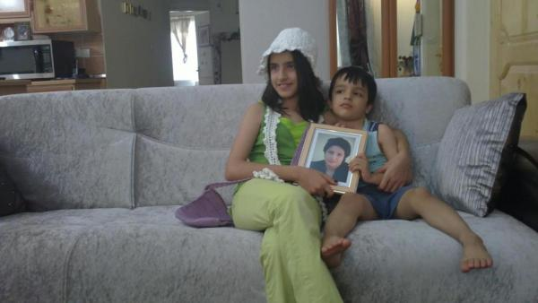

|
|

۷۴۰ روز دوری نیما و مهراوه از مادر
سه شنبه14 شهریور 1391
ندای سبز آزادی: دو سال پس از بازداشت و حبس نسرین ستوده وکیل دادگستری رضا خندان همسرش در نوشته ای به شرح رویداد روز بازداشت وی پرداخته است.
به گزارش ندای سبز آزادی، نسرین ستوده سیزده شهریور ماه 1389 به اتهام «اقدام علیه امنیت ملی» بازداشت شد.
وی وکالت تعدادی از پرونده های سیاسی و حقوق بشری از جمله وکالت شیرین عبادی، عیسی سحرخیز، کیوان صمیمی، محمدصدیق کبودوند، عاطفه نبوی، خدیجه مقدم، احمد نجاتی کارگر، از کشته شدگان پس از انتخابات و آرش رحمانی پور، از اعضای انجمن پادشاهی ایران را بر عهده داشته است.
این وکیل 49 ساله که سابقه روزنامه نگاری نیز در پرونده خود دارد، بعد از اخذ مدرک کارشناسی حقوق بین الملل از دانشگاه شهید بهشتی، در سال 1370 فعالیت مطبوعاتی خود را با نشریه "دریچه گفتگو" آغاز کرد و هم چنین مقالاتی را در روزنامه های جامعه، توس، صبح امروز و مجله آبان منتشر کرده است.
نسرین ستوده از سوم مهر ماه در اعتصاب غذا بود که پس از ۲۸روز اعتصاب غذایش را برای مدتی شکست اما بار دیگر در اعتراض به شرایط زندان به مدت ۹روز دست به اعتصاب خشک زد و تا روز برگزاری دادگاهش در تاریخ ۲۴آبان، به رغم شکستن اعتصاب غذای خشک، کماکان در اعتصاب غذا بود.
رضا خندان در صفحه شخصی خود با اشاره به فشارهای عاطفی که به فرزندانش در این مدت وارد آمده، نوشته است: نیما و مهراوه نه تنها در شب دوم بلکه 740 روز است که او را در کنار خود ندارند. مانند خیلی از بچههای دیگر. آنها با وجود همهی مشکلات, کم و بیش با موضوع کنار آمدهاند.

متن کامل این نوشته به شرح زیر است:
آن روز شنبه بود - 13 شهریور.
نسرین صبح زود رفت دادگاه برای پیگیری پروندهی موکلاناش و تا ساعت 10 برگشت.
بدون هیچگونه آمادگی و تدارک برای بازداشت به همراه خانم غنوی که وکیلاش بود به محل دادسرا رفتیم. ازدحام بیش از حد مردم در زیر آفتاب داغ در مقابل در ورودی دادسرا, ورود به آنجا را مشکل کرده بود. نسرین موضوع احضارش را با یکی از مامورین در میان گذاشت و به او گفت: " اینها خودشان منو احضار کردهاند و اگر نمیتوانند شرایط ورودم را مهیا کنند من برمیگردم تا اگر خواستند, زحمت بکشند خودشان با ماشین بیایند دنبالم".
بالاخره آن مامور راه را باز کرد و نسرین در میان ازدحام جمعیت وارد دادسرا شد. او حتی نتوانست با من خداحافظی کند. البته فکر میکرد که احتمالا پس از ساعاتی برمیگردد. او حتی از بچهها هم خداحافظی نکرده بود.
من بدبینتر از او بودم و احتمال می دادم مدتی او را در حبس و انفرادی نگه میدارند تا مطمئن شوند فشار بازداشت و دوری از بچهها باعث خواهد شد او از کشور خارج شود.
دقایقی بعد خانم غنوی از دادسرا به بیرون آمد و گفت که به او اجاره ندادند در بازپرسی حضور داشته باشد. اندکی بعد از آنجا رفتیم تا در ساعات پایانی وقت اداری دوباره به آنجا سری بزنیم شاید او را آزاد کرده باشند.
ساعت دو نیم بعد از ظهر بود که به زیر پل یادگار امام رسیدم. در آنجا پدر یکی از موکلین نسرین را دیدم که می گفت: "هرکاری کردم نتوانستم تلفنی از خانم ستوده خبری بگیرم. فکر بیام اینجا تا شاید بتوانم شما را در اینجا ببینم.
او از موضوع احضار نسرین خبر داشت بنابر این از صبح آمده بود آنجا و پشت یکی از ستونها کشیک میداده تا شاید به طور اتفاقی ما را ببیند و یا بتواند خبری از او بگیرد.
ساعت حدود سه و نیم بعد از ظهر بود که مهراوه سراسیمه زنگ زد و گفت که: "بابا تلفن خانه زنگ زد و یک آقای بیادبی با تحکم گفت که: "گوشی را بده به بزرگترت. شماره تلفناش هم نیفتاده بود. به خاطر همین من هم که تنها بودم گوشی را قطع کردم و آن را از پریزکشیدم تا دوباره مزاحم نشود. الان هم دارم با موبایل خودم زنگ میزنم."
چند روز بعد که برای پیگیری پرندهی نسرین به دادسرا رفته بودم, اینطور که بازپرس اولیهی نسرین میگفت به یکی از همکارانشان گفته بودند که به خانوادهی ستوده قرار بازداشتاش را اطلاع دهید.این تلفن و لحن تهدیدگونه و ترساندن یک بچهی تنها, در واقع نوعی اطلاعرسانی به شیوهی خودشان بوده است.
من خودم را فوری به خانه رساندم و از آنجا به دنبال نیما که در مهد کودک بود رفتیم. نزدیک خانه که رسیدیم نیما سراغ مادرش را گرفت و من گفتم که امشب مامان نیست و جایی رفته است. برای او نبود مادر در حد یک شب اتفاق غیر عادی نبود. ولی حتی تصور این که شب دوم هم مادرش را نبیند هول انگیز بود.
امروز دقیقا دو سال از آن روز سپری شده است. نیما و مهراوه نه تنها در شب دوم بلکه 740 روز است که او را در کنار خود ندارند. مانند خیلی از بچههای دیگر. آنها با وجود همهی مشکلات, کم و بیش با موضوع کنار آمدهاند.
و این همان قدرت انسان است. و دقیقا همان چیزی است که نفرت گرایان آن را نادیده میگیرند.
10 ماه بعد, یک روز هنگام برگشتن از ملاقات, مهراوه میگفت: "بابا این خانمهای مامور که مامان را به محل ملاقات میآورند خیلی مهربوناند. امروز که نیما داشت با مامان خدا حافظی میکرد اون خانم مامور یک گوشه ایستاده بود و آروم داشت اشکهایش را پاک می کرد.